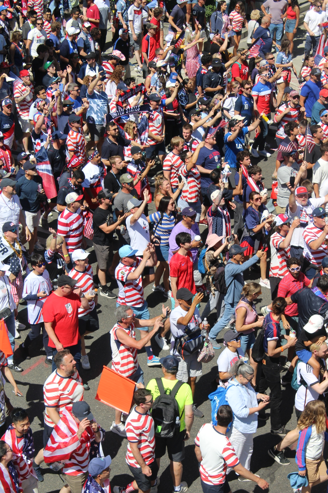

Who are you Wearing Today? Observations on the Performance of Identity and Fandom through the Jerseys Fans Wear at the 2026 FIFA World Cup in Seattle
To fully grasp the nature of a Seattle World Cup fan, one must understand the jersey they have on their back. From the 48 countries competing in the largest ever version of the world's premiere entertainment event, to the hundreds more that failed to qualify whose supporters watch others live out their nation's dreams, to the practically unlimited supply of club teams to represent from every corner of the globe, the badge one wears on the left side of their chest is more than an emblem of affiliation- it exists as active statement on allegiance and identity. Through existing sociological frameworks, we look to understand why we wear the jerseys we do, and what that says about the performance of being a fan.
We will utilize two sociological frameworks to understand what's in a jersey, the first of which being Social Identity Theory, first developed by Henri Tajfel and John Turner in 1979. They suggested that the nature of interaction is in people defining themselves by the social groups they belong to, ranging from class to religion to ethnicity to their interests. People are thus motivated to see their own group in a positive light, and compare themselves favorably to the out-grouping, though the out-group is often determined by the individual or the group themselves, and, similarly to the in-group, is not inherently demarcated. This pattern can breed stereotyping, prejudice, and a lack of cross-cultural understanding or assimilation, but additionally strengthens and entirely defines an individual's self-concept, as well as their comfortability in community. Identity is, then, not something inherent but a concept we actively create and replicate by those we associate with.
We will additionally look through a lens of Sport Performativity Theory, a retooling of Gender Performativity Theory, first proposed by Judith Butler in 1990. Similarly to Social Identity Theory, it is understood that identity isn't something that fans have, it's rather something that they do through actions. Rules and categorizations both in the sport itself and in its fandom are not fixed truths but rather constructs defined by socialization and habitualization. In the context of fans, individuals become fans through the performance of fandom. This performance varies based on context and audience, and is thus socially constructed and not inherent to the fan, their identity, or their habitus- though those can and do affect the performance. Fan performance is reinforced, or in opposition denied, by the multiplicity of identities that make up the individual, including but not limited to- race, gender, socioeconomic status, and nationality.
Unsurprisingly, the most common jerseys around the stadium on Seattle matchdays were those of the teams playing in the match. The decision to represent your squad during their match, whether you are in the stadium, watching on one of Seattle's (#?) massive (size?) screens set up for the public, or just going to a bar with friends, seems like a simple one; and in some ways, it is- after all, if a USA fan is watching the US play, why would their jersey represent anyone else?

Not all USA jerseys are created equal, however, and the way one chooses to rep the Stars and Stripes is a performance in itself. A lot of credit is given to folks wearing retro jerseys and those of players not known to be household names, and this peer validation is sought after by many fans. According to Performativity Theorists, symbolic systems are the means through which performance is enacted, as a symbol like a throwback jersey is recognized by both the wearer and its audience as providing credibility to the identity of the fan.

In other cases, wearing your squad's jersey exists more as a way to blend in- connecting yourself with others who you want to align yourself with through identity. In Social Identity Theory, this is referred to as Social Categorization- the process of classifying yourself into a grouping based on perceived similarities, regardless of how arbitrary or capricious they are. Through the symbol of a jersey, one makes themselves visually identifiable as a member of their in-group and actively differentiates themselves from the out-group, categorizing themself as a fan of their country- and one that is comfortable enough in that fandom that they are willing to make it instantly obvious to all passerby.
What happens, though, when your team isn't playing? Despite not playing a match in Seattle- or, indeed, in the States at all- jerseys of 'El Tri', the Mexican national team, were a perennial presence on match day. This decision, theorists would agree, speaks even more to an actively performed identity than prior examples: to represent your team even when they're not playing suggests an elevated level of comfortability with an identity- both that of a general fan and a fan of your team in specific. Wearing a jersey when you run the risk of wearing it alone holds a different power, and reflects on a different identity, than that of fitting into the group dynamic.

In the inverse, there are situations of performance where the symbol of a jersey is so overwhelmingly present that it becomes a necessity to wear to demarcate yourself as a member of the in-group. For the Round of 16 USA vs Belgium match, the fan-organized 'March to the Stadium' spanned many city blocks, as an estimated 25,000 fans made the half-mile (?) trek through downtown- chanting, singing, laughing- and wearing red, white, and blue. The inherent pressure from a crowd this size is so great that the USA jersey on your back is needed- not simply to identify yourself with the in-group, but in fact to deny an otherwise-presumed association with the out-group community.

In each aforementioned case, the politics of the identity one symbolically attaches themselves to is open to interpretation, even if the fact of the membership in the grouping itself is more definite. This ceases to be the case, however, when the jersey being worn is contextualized with a political message that cannot be ignored. Jerseys showcasing support for Palestine were a constant presence at Seattle matchdays, and the decision to perform under that symbol connects to identity expression in yet another differentiated way. The choice to wear a jersey supporting a nation absent not only from the match but from the tournament as a whole leaves little room for interpretation- it is a statement that the identity grouping of 'fan' is not the most relevant opportunity for that individual to perform; they decide, instead, to stand for a political cause.

Placeholder field note. Use this slot for analysis that ties the photo back to the project's shared theoretical framework. Add your photo + text here.